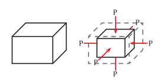

Compressie betekent het samendrukken of kleiner maken. Het is een breed begrip dat voor veel dingen kan worden toegepast. Ook voor informatica komt het begrip compressie aanbod. Het gaat dan over het verkleinen van een computerbestand. Het gaat daarbij om gegevens comprimeren wat het verminderen van het aantal bits van een bestand betekent. Door gegevens kleiner te maken, bijvoorbeeld door een foto van 10MB te comprimeren naar 5MB, zorg je ervoor dat het bestand minder plaats inneemt op je harde schijf. Er bestaan twee soorten compressie: exact omkeerbaar, waarbij er geen sprake is van kwaliteitsverlies (loseless) en niet-exact omkeerbaar, waarbij er wel sprake is van kwaliteitsverlies (lossy). Bestanden die zonder kwaliteitsverlies worden gecomprimeerd zijn vaak tekstdocumenten. Bestanden die vaak met kwaliteitsverlies worden gecomprimeerd zijn vrijwel altijd multimedia-bestanden zoals beel en geluid.
Meer te weten komen over compressie? Klik dan op deze link. 